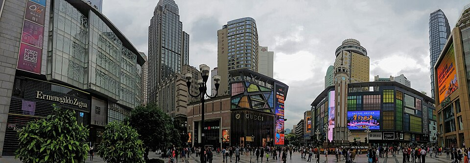

洪崖洞层叠的临江建筑，是重庆标志性的夜景之一。在 Instagram 查看 ↗Instagram： instagram.com/explore/tags/hongyacave/摄影：xiquinhosilva · CC BY 2.0 · 来源
解放碑围绕解放碑的市中心步行街区。在 Instagram 查看 ↗Instagram： instagram.com/explore/tags/jiefangbei/摄影：Ecelan · CC BY-SA 4.0 · 来源